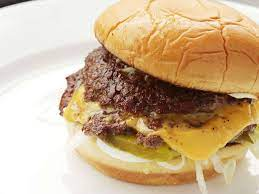

Homemade Smash Burgers

Description
This smash burger reipe makes super juicy burgers with crispy edges.
Don't use meat that is leaner than 80/20 for best results,
and make sure the meat is very cold. i prefer to cook these
outdoors to avoid smoking up kitchen these grill up very fast because of
the high heat, so make sure you have everything ready to go!
Ingredients
- 4 hamburger buns
- 2 tablespoons butter, softened, or as needed
- 1 pound ground chuck beed (80% lean)
- 4 6-inch squares parchment paper
- salt to taste
- 4 slices American cheese
- burger toppings of choice
- Preheat an outdoot grill for high heat and lighly
oil the grate. set a cast iron flat-top griddle or
large cast iron skillet onto the grill and preheat until smoking
-
spread butter on the inside of the buns and toast on the flat-top
until lightly browned. Set aside
-
From meat into 8 loosely-packed balls, 2 ounces each. Do not
pack the meat tightly, as this will prevent it from smashing properly.
Place each ball on the hot flat-top, cover with a piece of parchment
(to prevent sticking to the spatula; re-use each parchment square on
a second patty) and immediately smash down to a 1/4 inch thickness
using 2 stiff, sturdy spatulas as you press down. You may also use the
bottom of small skillet. Sprinkle the meat with salt.
-
Grill for about 45 seconds, until the edges are dark brown
and the centers are light pink color. Using a bench scraper
or firm spatula, gently scrape up the patties, flip over and
immediately cover 4 of them with cheese. Grill an additional
15 to 20 seconds; stack the plain patties over the cheese-coveredpatties so you
so you have 4 stacks. Move each stack to a bun and serve with your favorite
toppings.